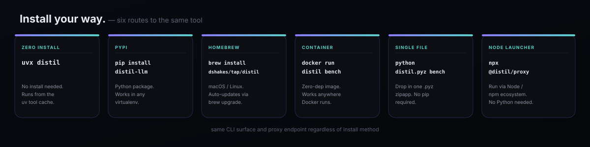

Deploy & Security
Three deployment topologies, one security model. The proxy is designed to be safe by default — it binds localhost, forwards only to the single configured upstream, and never touches your secrets.

Deployment topologies
Local dev sidecar
Run distil proxy on your laptop alongside your application. Default bind is 127.0.0.1:8788 — not reachable from the network. Zero infra overhead.
Container sidecar
Add the proxy as a sidecar container in the same Pod or Compose stack. Your app container calls http://localhost:8788; only the sidecar egresses to the upstream API.
Shared gateway
Run one proxy instance accessible to multiple services on a private network. Bind to an internal interface (--host 0.0.0.0), keep it behind a firewall or service mesh, never expose it to the public internet.
Local dev sidecar
# Terminal 1 distil proxy --port 8788 --upstream https://api.anthropic.com # Terminal 2 — your application ANTHROPIC_BASE_URL=http://127.0.0.1:8788 python my_agent.py
Container sidecar (Docker Compose)
services:
app:
build: .
environment:
- ANTHROPIC_BASE_URL=http://distil-proxy:8788
depends_on:
- distil-proxy
distil-proxy:
image: python:3.12-slim
command: >
sh -c "pip install distil-llm &&
distil proxy --host 0.0.0.0 --port 8788
--upstream https://api.anthropic.com"
ports: [] # not exposed externally
Shared gateway (Kubernetes)
apiVersion: apps/v1
kind: Deployment
metadata:
name: distil-proxy
spec:
replicas: 2
template:
spec:
containers:
- name: distil
image: python:3.12-slim
command:
- sh
- -c
- pip install distil-llm && distil proxy --host 0.0.0.0 --port 8788
env:
- name: DISTIL_UPSTREAM
value: https://api.anthropic.com
---
apiVersion: v1
kind: Service
metadata:
name: distil-proxy
spec:
clusterIP: ... # internal only — no LoadBalancer type
ports:
- port: 8788
Security model
Localhost-only by default
The proxy binds to 127.0.0.1 by default. It is not reachable from any other host unless you explicitly pass --host 0.0.0.0. In production topologies, always restrict network access to the proxy with a firewall rule or service mesh policy.
Single configured upstream — no SSRF
The upstream URL is set once at startup (--upstream). The proxy does not read the destination from the incoming request, so a malicious request body cannot redirect traffic to an attacker-controlled server. All outbound connections go to exactly one destination.
No request body logging
The proxy overrides log_message to suppress all request logs. It reads the request body to compress it, then discards it — nothing is written to disk or stdout. API keys, message content, and tool results are never logged.
# In distil/proxy.py — request logs are silenced by design
def log_message(self, fmt: str, *args: object) -> None:
pass
Auth-mode gating — prompt-cache stability and subscription policy
The proxy compresses the messages array only — never the system prefix — so Anthropic prompt-cache prefix stability is preserved in all modes. Two flags give additional control:
--lossless-only— policy mode: restricts the proxy to lossless strategies (no lossy output-shaping, no tool injection via--expand). The reversible Tier-1 digest still runs. Use for subscription or OAuth-gated deployments.--verbatim— skips the Tier-1 digest entirely, so the model sees message content byte-for-byte (Tier-0 only: JSON minification, run-length collapse). Use for interactive sessions or anywheredistil_expandrecovery is unavailable. Lower savings.
distil proxy --lossless-only --upstream https://api.anthropic.com distil proxy --verbatim --upstream https://api.anthropic.com
Hop-by-hop header stripping
The proxy strips connection-specific headers (Connection, Transfer-Encoding, Keep-Alive, etc.) before forwarding. This prevents header injection attacks and ensures clean HTTP/1.1 semantics at the upstream boundary.
Data retention and zero-data retention (ZDR)
Distil itself retains no data. The proxy is stateless: it reads a request, compresses the messages array in memory, forwards it, and relays the response. Nothing is written to disk.
If your Anthropic contract includes Zero Data Retention (ZDR), the compressed payload forwarded by the proxy is covered by the same ZDR terms as a direct call — Distil does not introduce any additional retention surface.
Managed gateway
Module: distil/gateway.py · Command: distil gateway
The managed gateway extends the basic proxy with per-tenant token and dollar accounting, a live auto-refreshing dashboard, and a JSON stats API. It is the right deployment target when multiple teams or applications share one distil instance and you want visibility into who is saving what.
Starting the gateway
# Default: binds 127.0.0.1:8789 and forwards to Anthropic $ distil gateway --port 8789 --upstream https://api.anthropic.com distil gateway listening on http://127.0.0.1:8789 dashboard: http://127.0.0.1:8789/distil/dashboard → upstream: https://api.anthropic.com # Full flag set $ distil gateway \ --host 0.0.0.0 \ --port 8789 \ --upstream https://api.anthropic.com \ --pricing claude-opus-4-8 \ --lossless-only \ --admin-token "$DISTIL_GATEWAY_TOKEN"
Flags
| Flag | Default | Description |
|---|---|---|
--host | 127.0.0.1 | Interface to bind on. Use 0.0.0.0 for network-accessible deployments (keep behind a firewall). |
--port | 8789 | Port to listen on (distinct from the basic proxy default of 8788). |
--upstream | https://api.anthropic.com | Real LLM API base URL. Set once at startup — cannot be overridden per-request. |
--pricing | claude-opus-4-8 | Model pricing key from the catalog; used for per-tenant dollar accounting in the dashboard. |
--lossless-only | off | Policy mode: lossless strategies only — no lossy output-shaping, no tool injection (--expand). The reversible Tier-1 digest still runs. Use for subscription / OAuth sessions. |
--verbatim | off | Skip the Tier-1 digest; Tier-0 only. Message content is byte-stable. Interactive-safe, lower savings. |
--admin-token | unset (env DISTIL_GATEWAY_TOKEN) | Bearer token required for /distil/stats and /distil/dashboard. On a non-loopback bind, these routes are disabled entirely without it. |
--trust-tenant-header | off | Honor the client-supplied x-distil-tenant header for accounting. Off by default — tenant identity comes from the credential hash. |
Per-tenant accounting
Every compressible request (POST /v1/messages, /v1/chat/completions, /v1/responses) is attributed to a tenant and its token counts are accumulated in-memory. Tenant identity comes from the authenticated credential by default, not from anything a client can set on the wire:
- Anonymized key hash — the gateway derives a stable 8-hex ID from
sha256(x-api-key or authorization), prefixedanon-. The raw key is never stored or logged — only the truncated hash. "default"— used when no credential is present at all.x-distil-tenantheader — honored only when the operator opts in with--trust-tenant-header, for deployments where an upstream gateway they control sets it. Off by default, because a client-writable header would otherwise let any caller book its traffic under another tenant's accounting line.
tenant_of() hashes the credential with SHA-256 and keeps only the first 8 hex characters; a client-supplied tenant label is only trusted when the operator explicitly enables --trust-tenant-header.
Management endpoints
GET /distil/stats
Returns a JSON snapshot of per-tenant and aggregate token/dollar savings. Suitable for polling from CI, alerting systems, or a cost dashboard.
GET /distil/dashboard
Self-contained dark HTML page that auto-refreshes every 5 seconds. Served inline — no CDN or external assets. Shows per-tenant requests, tokens saved, dollars saved, and compression rate.
Both endpoints are gated by _admin_authorized(): open with no restriction on a loopback bind and no token configured (single-operator local use); everywhere else — including any non-loopback bind — a valid Authorization: Bearer <admin-token> is required, or the route replies 403/401 rather than serving per-tenant usage data to the network.
# Non-loopback bind without a token: /distil/* is refused, not silently open $ distil gateway --host 0.0.0.0 --port 8789 --upstream https://api.anthropic.com distil gateway listening on http://0.0.0.0:8789 dashboard: http://0.0.0.0:8789/distil/dashboard ! non-loopback bind without --admin-token: /distil/* routes are disabled → upstream: https://api.anthropic.com # Require the token explicitly $ distil gateway --host 0.0.0.0 --admin-token "$(openssl rand -hex 24)" \ --upstream https://api.anthropic.com $ curl -H "Authorization: Bearer <token>" http://gateway-host:8789/distil/stats
$ curl -s http://127.0.0.1:8789/distil/stats | python3 -m json.tool
{
"tenants": [
{
"tenant": "team-search",
"requests": 142,
"tokens_baseline": 184320,
"tokens_compressed": 131904,
"tokens_saved": 52416,
"dollars_saved": 0.026208,
"pct_saved": 28.44
},
{
"tenant": "anon-3f9a1c2b",
"requests": 31,
"tokens_baseline": 40110,
"tokens_compressed": 29110,
"tokens_saved": 11000,
"dollars_saved": 0.005500,
"pct_saved": 27.42
}
],
"totals": {
"requests": 173,
"tokens_baseline": 224430,
"tokens_compressed": 161014,
"tokens_saved": 63416,
"dollars_saved": 0.031708,
"pct_saved": 28.26
}
}
/distil/* and compresses POST /v1/messages-family paths. Every other path and HTTP method is forwarded to the upstream transparently, with the same hop-by-hop header stripping and SSRF protection as the basic proxy.
Streaming and upstream timeouts
Module: distil/streamrelay.py · used by the sync proxy, the gateway, and (via aiohttp) the async proxy.
SSE responses are relayed chunk-by-chunk as the upstream produces them, not buffered start-to-finish. Buffering would turn time-to-first-token into time-to-last-token — exactly the latency an interactive agent session can't absorb. stream_upstream() reads with resp.read1() (return as soon as any bytes arrive, never wait for a full chunk to accumulate) and writes each chunk straight to the client, re-emitting Transfer-Encoding: chunked framing when the upstream declares no Content-Length. The complete body is still assembled in memory as it streams, so post-hoc, content-free accounting (shadow-mode decision comparison, token-saved headers) runs exactly as it does on a buffered response.
Upstream timeouts are configurable via DISTIL_UPSTREAM_TIMEOUT (seconds, default 600) — read by both the sync proxy/gateway (urllib socket timeout) and the async proxy (aiohttp sock_read timeout). A timed-out or unreachable upstream maps to an HTTP 504 before any bytes are sent to the client; once streaming has begun, a mid-stream failure closes the connection rather than appending an invalid error body to a partially-delivered response — there is no valid way to retrofit an error onto bytes the client already received.
# Give a slow upstream more room before the proxy gives up $ DISTIL_UPSTREAM_TIMEOUT=120 distil proxy --upstream https://api.anthropic.com
MCP server local store
Module: distil/mcp_server.py · Command: distil mcp
The MCP server's distil_expand tool needs the original text behind a handle to survive across process restarts, so it persists to $DISTIL_HOME/mcp_store.json (default ~/.distil/mcp_store.json) — the one place in Distil where plaintext tool-output content is written to disk rather than kept in-process only. Two hardening measures apply because of that:
- Owner-only permissions. The file is
chmod 0600on every write — unreadable by any other local user. - Bounded size. The store is capped at 512 entries; oldest handles age out FIFO, so it cannot grow without limit across long-running sessions.
Writes are atomic (write-temp-then-replace) and best-effort — a store write failure never crashes a tool call. If your deployment cannot accept plaintext-at-rest content at all, don't run distil mcp; use the proxy or an in-process adapter instead, where digested originals never leave memory.
Async high-concurrency proxy
Module: distil/aproxy.py · Flag: distil proxy --async · Extra: pip install 'distil-llm[async]'
The threaded proxy (distil/proxy.py) handles the common case. Under high fan-out — thousands of concurrent streaming sessions — the GIL becomes a bottleneck. The async proxy replaces the threaded HTTP server with an aiohttp event loop and a single shared ClientSession with an unlimited connector, sustaining far more concurrent streams at the same compression behavior.
distil/aproxy.py calls the same compress_messages() path as the threaded proxy. Every Tier-0/1 transform, the hop-by-hop header stripping, the SSRF protection, and the x-distil-compressed / x-distil-tokens-saved response headers are identical. The only difference is the concurrency model.
Starting the async proxy
# Install the async extra first $ pip install 'distil-llm[async]' # Start the async proxy (same flags as the threaded proxy) $ distil proxy --async --port 8788 --upstream https://api.anthropic.com distil async proxy listening on http://127.0.0.1:8788 → upstream: https://api.anthropic.com
All other distil proxy flags (--host, --upstream, --lossless-only, --verbatim, --shape-output) work identically with --async. Client configuration is unchanged — point your SDK at the same base_url.
Architecture
make_app() in distil/aproxy.py builds an aiohttp.web.Application with a single shared ClientSession (created in on_startup, closed in on_cleanup) using TCPConnector(limit=0) — unlimited concurrent connections. Compressible paths (/v1/messages, /v1/chat/completions, /v1/responses) go through the compression handler; everything else is transparent passthrough. aiohttp is lazy-imported so the stdlib core of distil remains dependency-free when the async extra is not installed.
Native Rust core
Crate: rust/distil-core · Module: distil/native.py · Build: maturin develop --release
The hot-path Tier-0 transforms and heuristic tokenizer are implemented as a PyO3 Rust crate. When the wheel is built and installed, distil.native transparently uses the fast native implementations and sets BACKEND = "rust". When the crate is absent (source-only install, CI without Rust), distil.native falls back to the pure-Python implementations from distil.compress.tier0 and distil.tokenizer with no import error — BACKEND = "python". All callers get the same API either way.
Functions
| Python name | Description | Rust signature |
|---|---|---|
minify_json(text) | Parse + re-emit JSON without whitespace; returns None for non-JSON | minify_json(&str) -> Option<String> |
collapse_runs(text) | RLE-encode consecutive identical lines | collapse_runs(&str) -> String |
count_tokens(text, subword_factor=1.33) | Heuristic token count (\w+|[^\w\s] × factor) | count_tokens(&str, f64) -> usize |
Benchmarks measured on Apple M-series (aarch64-apple-darwin, --release), 100 samples each, on a ~30 KB synthetic log with repeated lines, prose, and JSON snippets. collapse_runs achieves ~12 GB/s throughput. count_tokens is dominated by Unicode character-class scanning.
Build and install
# One-time: install maturin $ uv tool install maturin # Build and install the Rust extension into the project virtualenv $ cd rust/distil-core $ maturin develop --release # Verify the Rust backend loaded $ python3 -c "import distil.native as n; print(n.BACKEND)" rust
Run the Rust unit tests with cargo test from rust/distil-core (26 passed; 0 failed). Run the Python parity tests with uv run python -m pytest tests/test_native.py -v (8 passed). Both test suites pass in pure-Python fallback mode too.
distil/native.py wraps both backends behind a single API. If the Rust wheel is not installed, every function falls back to the pure-Python equivalent — same semantics, no import error. The core always works; it is transparently accelerated when built with maturin.
Threat model summary
The table below is a summary. The full threat model — assets, trust boundaries per component, and guarantees enforced in code — is tracked as a living document at THREAT_MODEL.md in the repository root; update it whenever a trust boundary moves.
| Threat | Mitigation |
|---|---|
| Network exposure of the proxy | Binds 127.0.0.1 by default; explicit --host required to listen externally. |
| SSRF via request body | Upstream is set once at startup; cannot be overridden by request content. |
| Secret exfiltration via logs | Request logging is disabled; no body content is written anywhere. |
| Cache prefix corruption | The proxy never compresses the system prefix, so prompt-cache stability holds in all modes. --verbatim additionally makes message content byte-stable (Tier-0 only). --lossless-only is the policy mode (no tool injection, digest still runs). |
| Header injection | Hop-by-hop headers are stripped before forwarding in both directions. |
| Data retention beyond request | Stateless handler; RestoreStore is in-process, not persisted. |
| API key exposure in gateway logs | Gateway derives tenant ID via sha256(key)[:8]; raw key never stored, never logged, not reconstructable. |
| Tenant accounting spoofed via a client header | Tenant identity comes from the credential hash by default; the client-writable x-distil-tenant header is ignored unless the operator opts in with --trust-tenant-header. |
| Per-tenant usage data read by unauthenticated network callers | /distil/stats and /distil/dashboard require a bearer --admin-token on any non-loopback bind; without one, those routes are refused rather than served openly. |
| Hung upstream connection / connection stuck open | Requests time out per DISTIL_UPSTREAM_TIMEOUT (default 600s) and map to a 504, on the sync proxy/gateway and the async proxy alike. |
| MCP local store readable by other local users, or growing unbounded | mcp_store.json is chmod 0600 on every write and FIFO-bounded to 512 entries. |
For compliance teams
Two artifacts double as an audit trail that compression didn't quietly change agent behavior: the DERC certificate (a distribution-free, finite-sample statistical guarantee, re-run in CI on every strategy) and the shadow-mode ledger (a rolling record of live decision-equivalence on your actual traffic, sampled and compared in real time). Together they're evidence, not a claim: a certificate ships with its exchangeability assumptions stated inline, and the shadow ledger is local data you already hold, not a vendor-reported number. See THREAT_MODEL.md for the accompanying trust-boundary review.